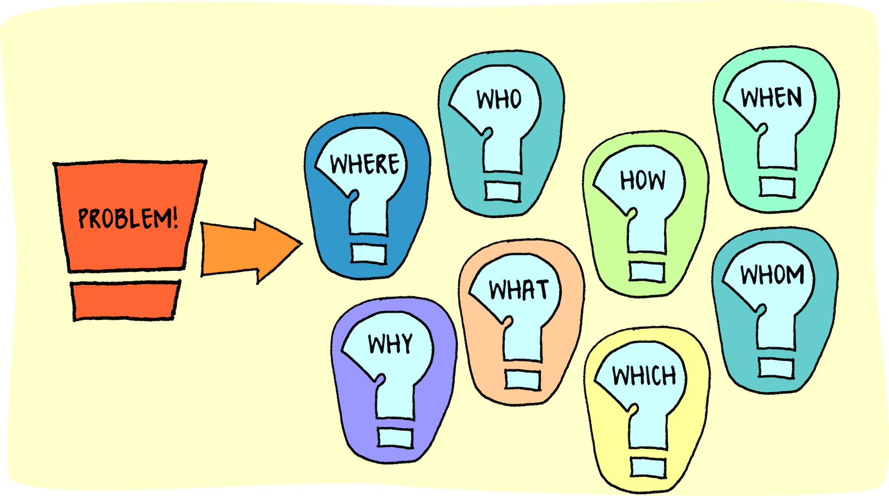

WHY I THINK I SHOULD BE PART OF CODE CAMP
I believe my existing skills, abilities, and mindset make me an ideal candidate to excel in Code Camp. While I know the competition is fierce, I believe my passion and dedication are difficult to match.
There’s little I love more than learning new skills and applying them creatively. I can spend all day hunched over a project, tweaking and problem-solving until I get it right. When I have a goal, an understanding of the necessary skills, and a general idea of how to achieve that goal, nothing can stop me. For example, here are some achievements from the last four years, all of which I tackled with no prior experience:
- Designed, 3D printed, and coded a robot from scratch
- Learned Mongolian throat singing
- Built a Morin Khuur
- Achieved conversational fluency in Japanese in less than two years
- Reached A2 level in Dutch
- Learned Morse code in less than an hour
- Reached a high level on the drums in less than a year
- Excelled in my current role, attaining the second level of accreditation at the earliest opportunity
Aside from the drums and my current role, all other skills were learned independently, in my free time. I learn from various sources and try to apply what I learn immediately. I use spaced repetition to retain information when applicable. In my current role and on the drums, I engage fully in training and lessons, making the most of opportunities available to me, making sure I’m able to apply what I’ve learned in my independent efforts. I always take feedback on board and use my mistakes as learning experiences.
I also work well as part of a team, always prioritising the work over my ego and considering everyone’s ideas and feelings. My manager has described me as a source of positivity in the team. I love building people up and encouraging them to try new things. A good example of this are my Ukulele lessons that I hold as part of Time for You. I’m always encouraging and make sure to explain potentially complex concepts in a way that’s easy to understand and apply.

Problem solving is one of my strongest skills, and the one I enjoy using the most. I’m great at thinking outside the box and often find solutions that aren’t immediately obvious. When faced with a problem, I break it down into smaller tasks and tackle them until I find the solution. If that’s not possible, I approach the problem from a different angle. All of the projects listed above were full of roadblocks, but I kept believing in the process, pushed forward, and achieved my goals.
I have good attention to detail. For example, learning the Japanese Kanji, which has around 2,200 very similar looking characters has challenged me to focus on minute details while keeping the bigger picture in mind. I am also an analytical thinker, which is why I’m loving code - it just makes sense! If something has gone wrong, its because I’ve done it wrong. I believe working within strict parameters leads to greater creativity, and ideas and solutions you wouldn’t of thought of normally.
To conclude, I believe my strong growth mindset, resilience, passion, problem-solving skills, communication skills, social skills, analytical skills, and ability to immerse myself in a project make me a great candidate to make the most of the incredible opportunity that is Code Camp. I have a deep interest and passion for computers and software, and I put everything I have into my passions. If selected, Code Camp would become my priority, and I would be more than ready to complete it entirely in my own time were it necessary.